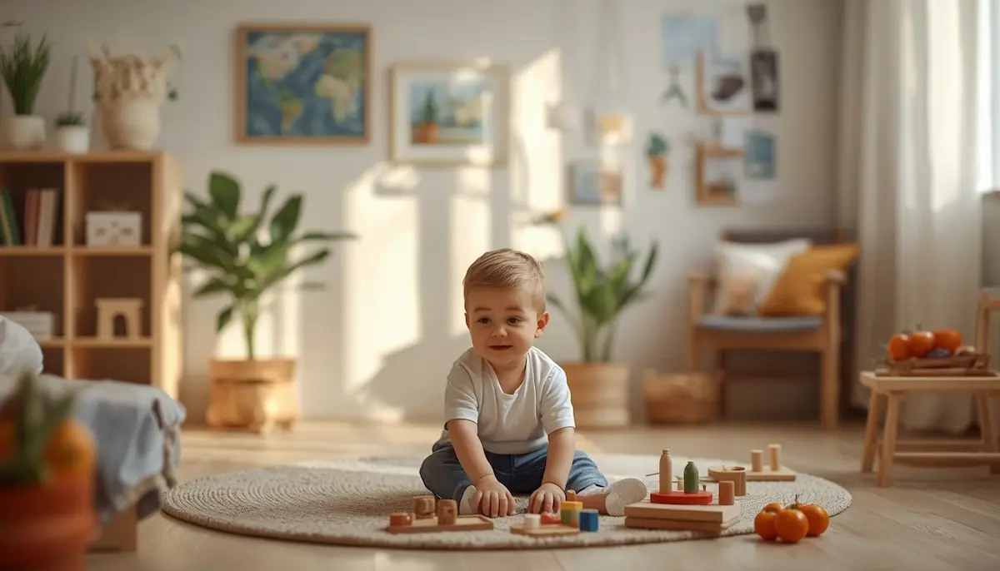

Estrellas únicas en su camino: comprendiendo las enfermedades raras en la infancia
Cuando nos enfrentamos al diagnóstico de una enfermedad poco frecuente en la infancia, el terreno desconcierta y a menudo abruma por la falta de respuestas inmediatas. He querido reunir aquí un mapa amable, basado en la experiencia clínica y el sentido común, para que las familias caminen con el paso firme de quien sabe qué pisa. Sin ruidos, sin alarmismos y con la certeza absoluta de que los niños siguen siendo niños, con ganas infinitas de descubrir y sonreír. Pincha en cada tarjeta para profundizar en cada tema.

Un refugio frente al desconcierto
El primer impacto sacude por la incertidumbre del nombre y el camino desconocido. Pero el vértigo inicial se disipa rápido cuando entiendes que la red de apoyo se organiza y la vida continúa con la misma alegría de siempre.
Descubrir más ➔Comprendiendo la singularidad
Pensemos en la diversidad genética y funcional como un engranaje único: cada cuerpo funciona bajo sus propias reglas y comprender su base nos ayuda a cuidarlo mejor sin perder de vista la esencia del niño.
Descubrir más ➔
El camino hacia el diagnóstico
El cuerpo y el desarrollo infantil avisan a su propio ritmo. Escuchar las señales tempranas, coordinar especialistas y buscar respuestas con paciencia es la clave para empezar a transitar el camino con seguridad.
Descubrir más ➔
Terapias y autonomía adaptada
Cada pequeño logro motor o comunicativo es una victoria. Se trata de integrar las terapias en el día a día como un juego más, fomentando su independencia y su libertad dentro de sus propias posibilidades.
Descubrir más ➔Navegando entre especialistas
La coordinación médica y la atención multidisciplinar forman parte de la rutina cotidiana. Con una buena organización y un cuaderno de seguimiento, todo se vuelve más amable y fluido.
Descubrir más ➔Inclusión en el colegio y el vecindario
Informar al centro educativo con naturalidad y fomentar la empatía en el grupo fortalece su autoestima y garantiza que en clase se sienta plenamente integrado y querido.
Descubrir más ➔
El impacto en la familia y hermanos
La gestión de los cuidados involucra a todos bajo el mismo techo. Cuidar que los hermanos comprendan la situación previene sentimientos de desplazamiento y fomenta un equipo familiar muy unido.
Descubrir más ➔Cuidar a quien cuida
Sostener el timón ante lo desconocido desgasta profundamente. Permitirse descansar, buscar redes de apoyo similares y vaciar la mochila de culpas es indispensable para cuidar con serenidad.
Descubrir más ➔⭐ Continúa profundizando en el autocuidado y la calma
Para acompañar los momentos de gestión familiar y bienestar de forma completa, te sugerimos explorar estos recursos:
- 🎙️ Escucha el podcast: Sanar el agotamiento y la culpa parental (Ep. 09)
- 📥 Descarga el recurso práctico: Guía de Autocuidado para Familias (PDF)